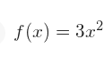
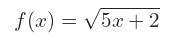
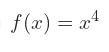
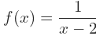
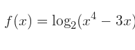
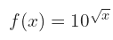
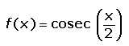

Maestra: Beltran Aguirre Fabiola del Carmen
Equipo: 6
Seccion: D09
Materia: Metodos Matemáticos II
Alumno: Flores Moya Saulo
Alumno: Flores Vicente Daniel
Alumno: Mercado Mejia Jessen Alejandro
Este programa se hizo con la finalidad de ayudar a los estudiantes a comprobar que sus derivadas tengan el resultado correcto
Por definicion 
Con raíz cuadrada sqrt(funcion) 
Con potencia 
Con cociente 
Logaritmicas log() 
Exponenciales 
Hiperbolicas 